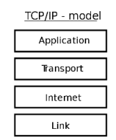

Introduction to Computing
Introduction to Networks
Home Network
Virtualisation
Introduction to Virtualisation
Virtualisation Advantages
Virtualisation Challenges
Hardware Virtualisation
Connecting to a VM
Introduction to Vagrant
Vagrant and Virtualisation
TCP/IP Protocol Stack
TCP/IP Protocol Stack & Data Link
Packet Sniffing using TShark
TCP/IP Protocol Stack
TCP/IP Protocol Stack & Data Link

Packet Sniffing using TShark